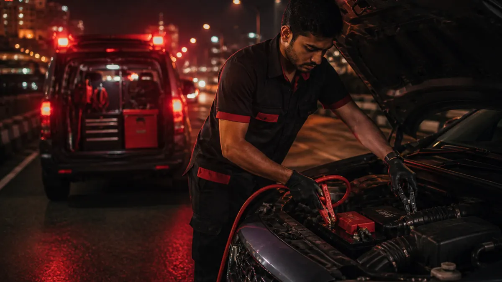
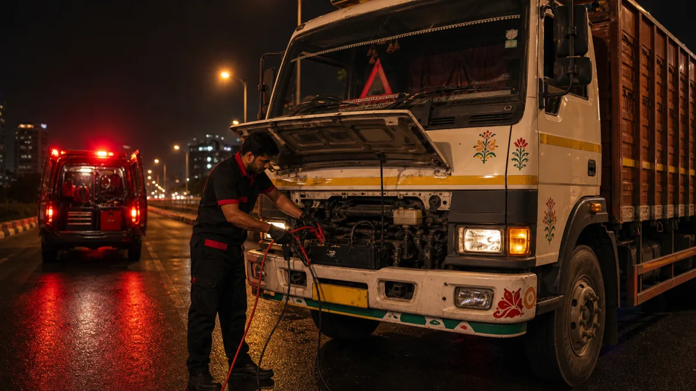
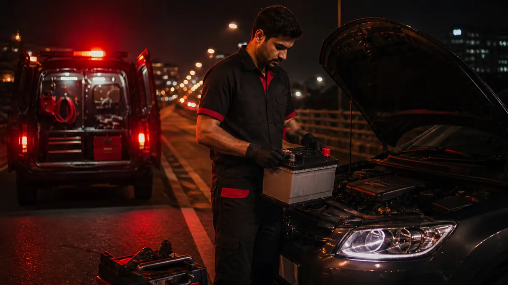
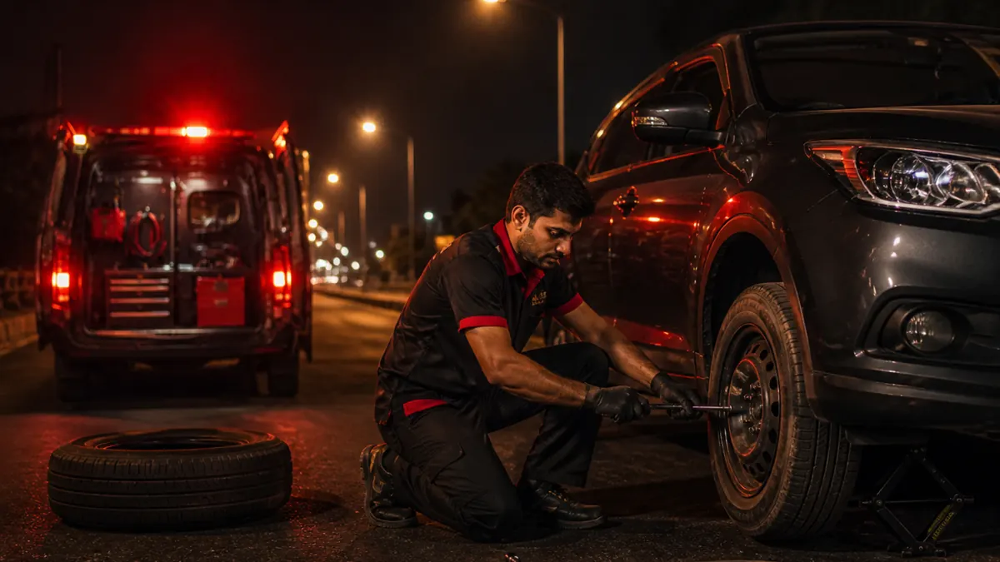

⚡
Battery Jump Start
Car not starting? If your battery is weak or drained, call us. We come to your location and help jump start your vehicle safely.
Car or truck not starting, tyre flat, or fuel finished? Kota Road Assist provides quick roadside help across Kota for battery jump start, truck jump start, battery replacement, fuel delivery, puncture repair and tyre assistance.
Need help now? Call 9649289546 or WhatsApp your live location.

Car not starting? If your battery is weak or drained, call us. We come to your location and help jump start your vehicle safely.

Truck battery down near Kota? We provide truck jump start support for commercial vehicles where access and safety conditions allow. Charges start at ₹800 and usually depend on distance.

Need a new car battery? We can arrange and install a suitable battery at your location. Battery price depends on brand, warranty and vehicle model. Service charge applies separately.

Got a flat tyre or searching for puncture repair near you in Kota? We can help with stepney change, puncture support or tyre assistance depending on the situation. Puncture repair is charged per puncture.
Ran out of petrol or diesel? Share your live location on WhatsApp. We deliver limited emergency fuel where safely possible. Fuel cost is charged separately.
Kota Road Assist supports truck jump start requests for transport vehicles, delivery vehicles and other commercial vehicles stuck with a weak or discharged battery in Kota. Share your live location, vehicle type and access details on WhatsApp so the technician can confirm feasibility before dispatch.
Truck jump start pricing starts at ₹800. The final charge usually depends on distance, vehicle location, time and technician availability, and it is confirmed before support is sent.
If you are searching for puncture repair near me, puncture shop near me or roadside tyre assistance near me in Kota, Kota Road Assist can help with stepney change, puncture support and flat tyre help based on your vehicle and location.
Share your live location and tyre issue on WhatsApp. If repair is possible at the spot, puncture repair is charged per puncture; if not, we help with practical roadside tyre support where safely possible.
Final charges may vary depending on location, vehicle type, time, and availability. Price will be confirmed before dispatch.
Call/WhatsApp support may be available 24x7. Actual service availability depends on technician and location availability.
Need battery jump start, truck jump start, fuel delivery or puncture help in Mahaveer Nagar, Kota? Call Kota Road Assist for quick roadside assistance near you.
Stuck with a dead battery or flat tyre in Dadabari? Call or WhatsApp Kota Road Assist for local car and truck roadside help.
For car battery, truck jump start, fuel or flat tyre help in Talwandi, contact Kota Road Assist and share your live location.
Need emergency car or truck help in Vigyan Nagar? Get battery, fuel and puncture support quickly.
Road assist in Jawahar Nagar for battery jump start, truck jump start, puncture service and fuel delivery Kota.
In Gumanpura, call Kota Road Assist for fast emergency car and truck help Kota with live location support.
Road assist in Kunadi for flat tyre help Kota, truck jump start and battery replacement Kota.
If you are in Nayapura with car or truck trouble, call us for urgent roadside assistance in Kota.
Road assist in Rajeev Gandhi Nagar for battery, truck jump start, fuel and tyre emergency support.
Need road assist in Indra Vihar? We provide quick local response for car and truck battery issues based on availability.
Road assist in Keshavpura with clear pricing confirmation before dispatch.
For road assist in Borkhera, call/WhatsApp Kota Road Assist and share location.
Road assist in Baran Road for puncture service Kota, jump start, truck jump start and fuel delivery.
Road assist in Jhalawar Road for reliable battery, truck and flat tyre help.
Road assist in Transport Nagar with truck jump start support, fast communication and confirmed charges.
Call/WhatsApp support may be available 24x7. Actual service depends on technician and location availability.
Yes. Use WhatsApp and share your live location with issue details.
Yes. We arrange battery replacement based on vehicle model and battery availability.
Yes. Fuel delivery support is available where safely possible.
We provide puncture repair, puncture support and stepney change as per situation.
We cover major areas including Mahaveer Nagar, Dadabari, Talwandi, Vigyan Nagar and nearby locations.
Yes. We always confirm charges before sending support.
Battery jump start is ₹350. Truck jump start starts at ₹800 and usually depends on distance. Fuel delivery is ₹250 plus actual fuel cost. Flat tyre/puncture help is ₹350 plus ₹100 per puncture. Battery replacement is battery cost plus ₹350 service charge. Final price is confirmed before dispatch.
Yes. Truck jump start support is available for commercial vehicles where technician access and safety conditions allow. Share your location and truck details for price confirmation.
Yes. Share your live location for puncture repair, puncture shop support, stepney change or roadside tyre assistance in Kota. Service depends on vehicle type, tyre condition and technician availability.
Kota Road Assist is a local roadside assistance in Kota and road assist in Kota service operated by Blackstone Traders. We provide car battery jump start Kota, truck jump start Kota, car battery replacement Kota, fuel delivery Kota, puncture repair Kota, puncture service Kota, roadside tyre assistance Kota, flat tyre help Kota and emergency car help Kota.
Blackstone Traders
H.No. 4-K-32, Mahaveer Nagar III, Kota, Rajasthan
Call/WhatsApp: 9649289546
Email: blackstonetraderskota@gmail.com